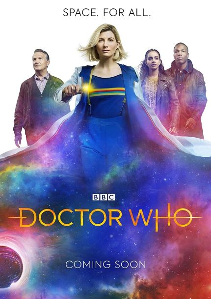
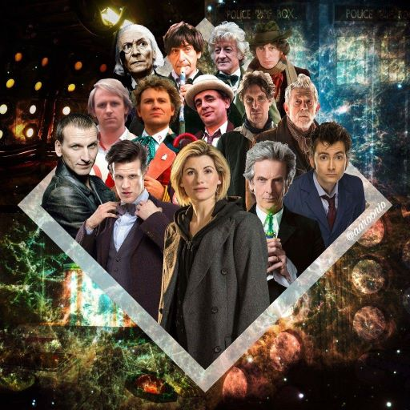
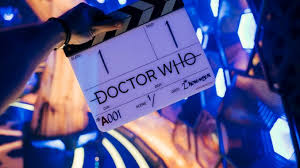

Doctor Who, serie de televisión británica de ciencia ficción producida por la British Broadcasting Corporation (BBC). La presentación original del programa duró 26 años, de 1963 a 1989. Recordado por sus efectos especiales primitivos y sus convincentes argumentos, Doctor Who se convirtió en un hito de la cultura popular británica. La serie se reanudó con gran éxito en 2005.
Narra las aventuras de un excéntrico científico que viaja en el tiempo desde el remoto planeta Gallifrey, hogar de los Señores del Tiempo. El Doctor, un Señor del Tiempo, viajó a través del tiempo y el espacio en su nave única, la TARDIS, un acrónimo de Tiempo y Dimensiones Relativas en el Espacio. Con un interior más grande que su exterior, la TARDIS podría tomar varias formas para mezclarse con su entorno. Aunque era capaz de llevar al Doctor y sus pasajeros a cualquier momento y lugar del universo, la nave se estacionaba con frecuencia en la Tierra en forma de cabina de policía azul. Ya sea en Inglaterra o en los confines del espacio, el Doctor y sus colegas lucharon contra una multitud de males, incluidos robots, monstruos y un retorcido Señor del Tiempo. Ciertos adversarios se repitieron a lo largo de la serie, en particular los Daleks, extraterrestres genocidas armados con trajes de robot que buscaban el exterminio de formas de vida inferiores a ellos.
El Doctor original fue interpretado por William Hartnell hasta 1966, cuando el programa reveló que los Señores del Tiempo tenían la capacidad de regenerarse cuando estaban cerca de la muerte. Sus formas reencarnadas aparecían como personas diferentes, aunque conservaban los mismos recuerdos y habilidades. Este giro de la trama permitió que diferentes actores asumieran el papel principal. La serie original finalmente contó con siete Doctores diferentes, el más longevo de los cuales fue Tom Baker (1974-1981). En el transcurso del programa, los compañeros del Doctor incluyeron al brigadier Lethbridge-Stewart (Nicholas Courtney), comandante de una organización que combate a los extraterrestres; Jamie McCrimmon (Frazer Hines), un escocés del siglo XVIII; y Sarah Jane Smith (Elisabeth Sladen), una periodista de investigación.
Conoce más del Doctor...
Doctor Who Guide
Originalmente, Doctor Who estaba destinado a ser un programa de televisión educativo para la familia. Dos de los personajes principales originales eran profesores de ciencias e historia. Muchas de las primeras historias eran puramente históricas sin extraterrestres. Estas historias históricas fueron eliminadas a finales de los años 60 a medida que aumentaba la popularidad de los escenarios más alienígenas.
History & Timeline
El personaje de El Doctor existe desde los años sesenta, y a día de hoy aún no se sabe su nombre (El Doctor es un apodo que escogió porque es un juramento de nobleza). Lo único que se sabe hasta ahora de El Doctor es que se trata de un viajero alienígena excéntrico de gran inteligencia que lucha contra la injusticia mientras explora el tiempo y el espacio en una máquina denominada TARDIS(Tiempo y Dimensión Relativa en el Espacio).
Seasons
La serie de televisión británica de ciencia ficción Doctor Who tiene dos etapas diferenciadas: la serie clásica, emitida entre 1963 y 1989, en la que se cuenta la historia de los siete primeros Doctores, y la moderna, emitida desde 2005 hasta la actualidad, donde se narra la historia del Noveno Doctor en adelante. Estas dos etapas se emitieron originalmente en BBC One, de la BBC. Aunque no existe ni ha existido jamás como tal un canon oficial de la serie que dicte lo que es válido y lo que no, en la continuidad de la trama, además de lo televisado en las dos épocas de la serie, también se incluye Doctor Who: La película, emitida en 1996, que narraba la regeneración y primera aventura del Octavo Doctor.